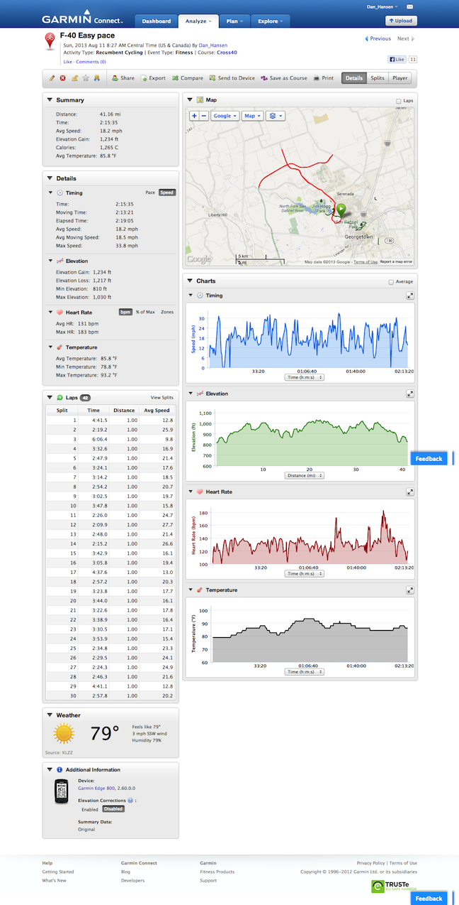

First normal easy training ride
11 Aug 2013
The legs are getting really tired and need a rest day. So, today I decided to just easy peddle it on my normal 41 mile training ride.
41 miles @ 18.2 average speed.
Had to stop for a few minutes after the first couple of miles to tighten down the left side rear view mirror. I’m going to have to get a bunch of lock washers because the rough Texas chip seal can vibrate pretty bad sometimes.
This was my first experience in busy traffic, stop lights, left hand turns, etc. My handling of the F-40 has become mostly second nature at lower speeds. I’m still working on the high speed flying part.
My heart rate on this bike is much greater than my heart rate on the Musashi or Baron. I wonder if it is because I’m sitting up in a much higher position?
Strava marked me as having 250KM for the month (158 miles) - 60 miles as a P-38 and 98 miles as an F-40.
http://connect.garmin.com/modern/activity/357127392
